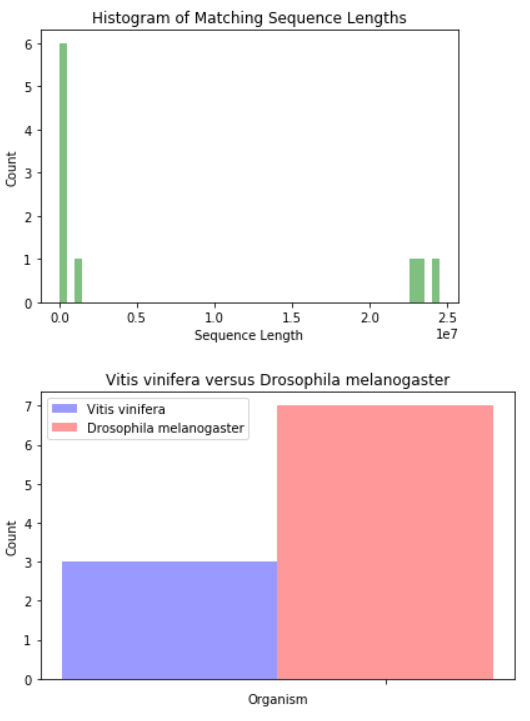

In this lab, we will use Python for automating data analysis tasks. This lab can be done in pairs. Computer Science majors cannot pair with each other. You can do it solo if you wish. Pairs are not required. If working in a pair, only submit from one person with both names on the files.
By accident, a bioinformatics lab mixed up DNA sequences in a single data file for two organisms: fruit fly (Drosophila melanogaster) and a grape (Vitis vinifera). Your goal is to figure out which sequences belong to each organism while also learning about the NCBI databases, specifically BLAST. Create a Python program that reads the sequences from a text file (one per line), performs a BLAST search if not previously done, stores the results of each search in a separate file, and then performs analytics on the search results to help solve our sequence mix-up problem. Details:
lab6q1 with your name and student number. (0.5 mark)count. (0.5 mark)try-except clause, look for a previously created BLAST result file that should be named dna_lab6_count.xml. For example, dna_lab6_1.xml. Start the number from 1. (2 marks)Using saved file. (1 mark)Performing online BLAST search. Note that you will have to import some modules from Biopython which are not already installed with Anaconda. To install with Anaconda, run this command: conda install -c https://conda.anaconda.org/anaconda biopythonOtherwise, see these download/install instructions.
from Bio.Blast import NCBIWWW from Bio.Blast import NCBIXML
NCBIWWW.qblast("blastn", "nt", seq) method and store results in a file with filename described above. seq is a variable storing your string sequence. Make sure to close the BLAST request and the save file. Re-open the file for reading. (2 marks)NCBIXML.parse(blast_infile) to get the BLAST record. (1 mark)blast_record.alignments[0].title) determine if DNA sequence belongs to fruit fly or grape. Use a list where there is a 1 if the DNA sequence is for the grape and a 0 if it is for the fruit fly. (1 marks)blast_record.alignments[0].length). (1 mark)input.txt file are processed, print out the list containing 1 if the DNA sequence is for the grape and a 0 if it is for the fruit fly. Also print out the list storing the sizes of the alignments. (1 mark)input.txt file when done. (0.5 marks)import matplotlib.mlab. (1 mark)import matplotlib.pyplot. (2 marks)Sequence: GGCTGCGGAGACGTTGAAGG Length: 560 Using saved file. Sequence: CGACAATGCACGACAGAGGA Length: 1190 Using saved file. Sequence: TTCTCTGTCTTATATTACCG Length: 1470 Using saved file. Sequence: ACTATTCCAAACAGCTCATA Length: 910 Using saved file. Sequence: GGACACCGCATTAGCCCAAA Length: 490 Using saved file. Sequence: GGGTATAATTTCAAAGGAGG Length: 1960 Using saved file. Sequence: TTATTATATTATTATATTAT Length: 1610 Using saved file. Sequence: ACAGTGATGCGTGGAGTGCG Length: 307 Using saved file. Sequence: TAATTTTCTCACGCGCAAAT Length: 1610 Using saved file. Sequence: CCAAATCAGATTGTGTAACG Length: 1610 Using saved file. [1, 0, 0, 0, 1, 0, 0, 1, 0, 0] [1938, 23011485, 24543538, 23542271, 954, 33246, 1348131, 307, 159272, 3436]
When complete, submit your code file using Connect:
lab6q1 - Python code for question 1. May be a .txt, .py, or .ipynb file.